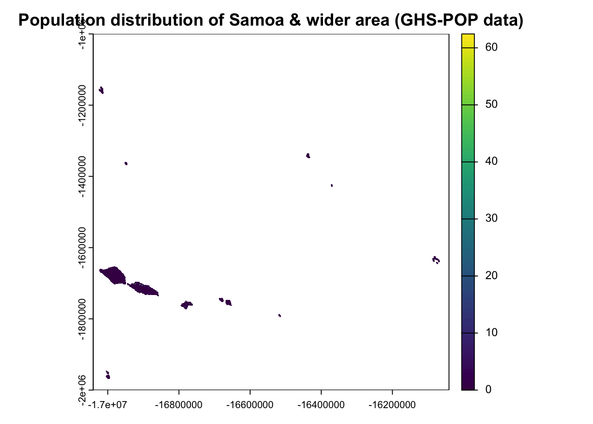
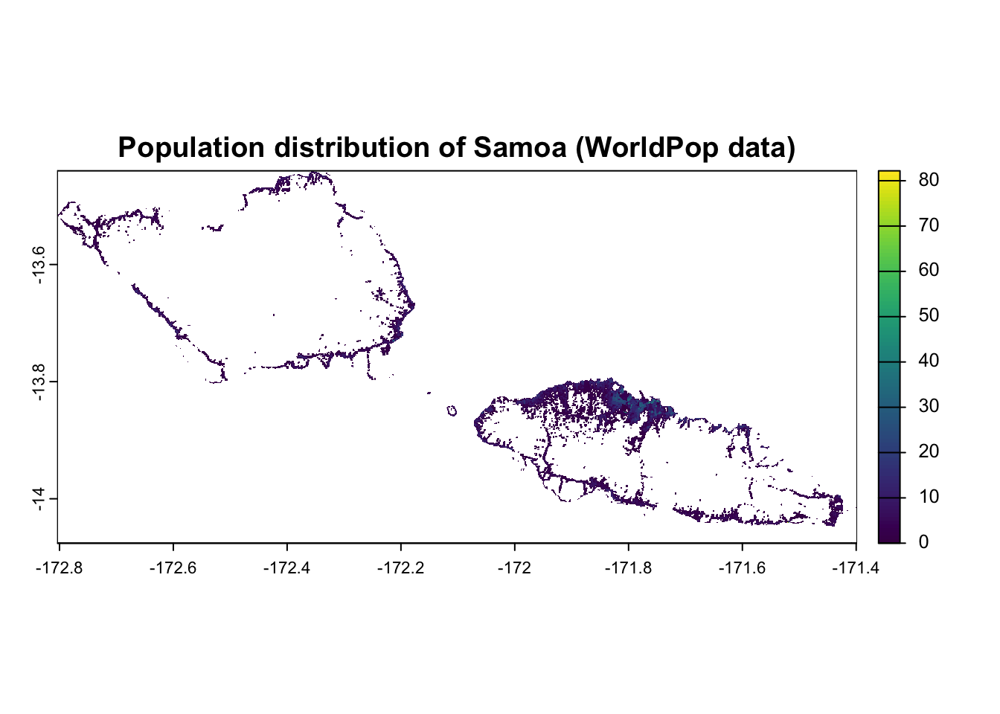
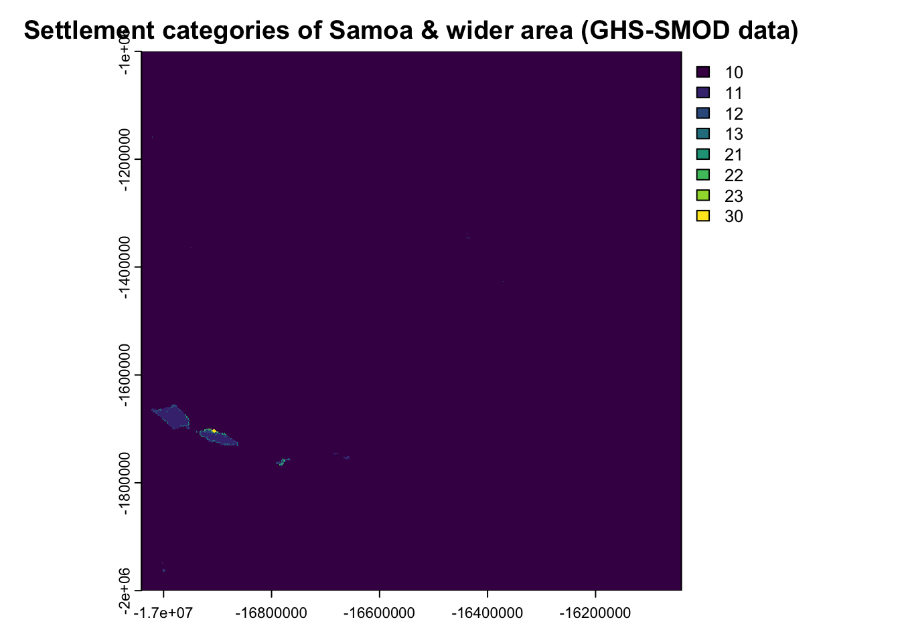
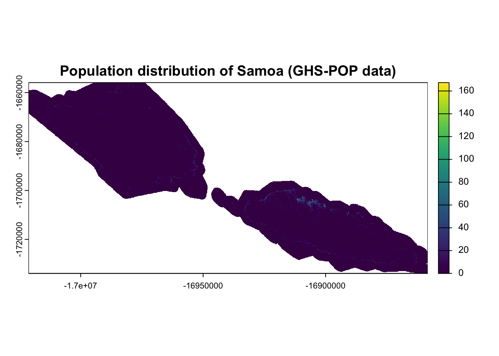
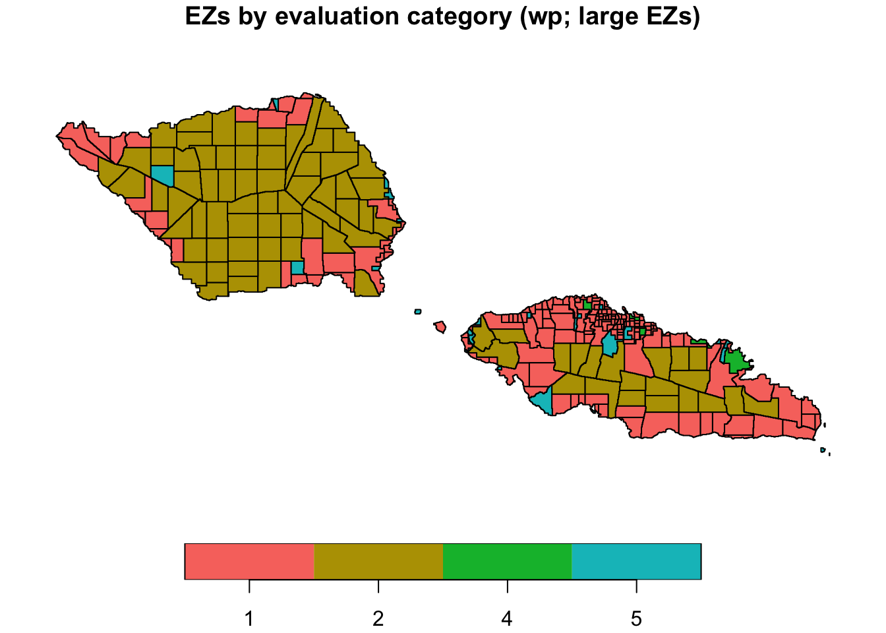
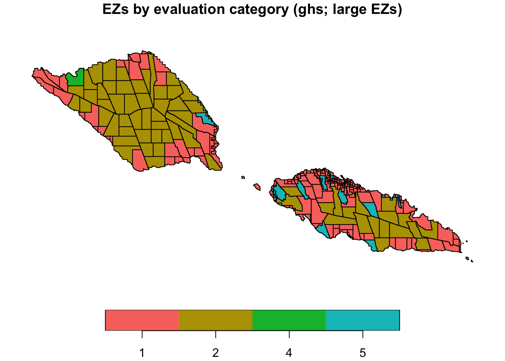

# list of required packages
required_packages <- c("sf", "terra", "parallel", "data.table", "ggplot2", "scico", "patchwork")
# install missing packages
install.packages(setdiff(required_packages, installed.packages()[, "Package"]))
# load packages
library(sf)
library(terra)
library(data.table)
library(parallel)
library(ggplot2)
library(scico)
#library(patchwork)
library(gridEZ2)Tutorial 2: applying gridEZ to different population datasets
Suggested citation: Dooley, C.A. (2025). gridEZ Tutorial 2 version 1.0
Tutorial Aim
The aim of this tutorial is to generate and compare bespoke gridded sampling frames for Samoa based on different gridded population datasets. Comparisons will be made for three different target Enumeration Zone (EZ) population sizes.
If you are not familiar with the gridEZ function, we recommend that you go through Tutorial 1 first where the outputs and their features are explained in detail.
Packages
Load all the R packages necessary to complete this tutorial. If you have not yet installed the gridEZ2 package, please follow the instructions on the Tutorial Overview page.
Datasets
In this tutorial, we read in datasets from a folder called “data_wsm”. The code below checks whether you have the folder already. If you don’t, the code will create it.
# check your working directory
getwd()
# you may need to change your working directory to point to the location where the data_wsm folder sits. Use setwd() to change your working directory if needed
# check whether the data folder already exists - if not, create the folder
file_path <- paste0(getwd(),"/data_wsm/")
if (!dir.exists(paste0(file_path))) {
dir.create(file_path)
}Population counts data
We will use two different datasets fro creating sampling frames: GHS-POP and WorldPop (which we also used in Tutorial 1).
GHS-POP
We will use Global Human Settlement Layer Population Grid data (GHS-POP) (Pesaresi et al. 2024). To download the data, go to the GHS-POP website: https://human-settlement.emergency.copernicus.eu/download.php?ds=pop
First, select the following options on the left hand side:
Epoch = 2025
Resolution = 100m
Coord. system = Mollweide
Second, hover your cursor over the map until you find Tile ID: R11_C2 (the Tile ID is written under the map). Click the tile to download. Unzip the data and add to the data folder called “data_wsm”.
popghs_raster <- terra::rast(paste0(getwd(),"/data_wsm/GHS_POP_E2025_GLOBE_R2023A_54009_100_V1_0_R11_C2/GHS_POP_E2025_GLOBE_R2023A_54009_100_V1_0_R11_C2.tif"))
plot(popghs_raster,main="Population distribution of Samoa & wider area (GHS-POP data)")
As you can see the GHS-POP tile covers a large area. We will crop this data later in the tutorial!
WorldPop
If you have completed Tutorial 1 skip the rest of this datasets section.
We will use WorldPop’s population counts data (Bondarenko M. 2025). This global dataset has spatial resolution of 3 arc (approximately 100m at the equator) and has population constrained to grid cells that contain settlement. We will use the data for Samoa with estimated population counts for 2025 (alpha version: R2025A version v1).
More information about the dataset can be found here: https://hub.worldpop.org/geodata/summary?id=76095
You can read in the data directly from the WorldPop server or you can download the data via the link above and then read the data into R.
# Option 1: read in directly from WP server
popwp_raster<- terra::rast("https://data.worldpop.org/GIS/Population/Global_2015_2030/R2025A/2025/WSM/v1/100m/constrained/wsm_pop_2025_CN_100m_R2025A_v1.tif")# Option 2: read in from file after download
popwp_raster<- terra::rast(paste0(getwd(),"/data_wsm/wsm_pop_2025_CN_100m_R2025A_v1.tif"))plot(popwp_raster,main="Population distribution of Samoa (WorldPop data)")
Settlement classification data
We will use Global Human Settlement Layer Settlement Model data (GHS-SMOD) (Pesaresi et al. 2024; Schiavina, Melchiorri, and Pesaresi 2023). To download the data, go to the GHS-SMOD website: https://human-settlement.emergency.copernicus.eu/download.php?ds=smod
First, select the following options on the left hand side:
Epoch = 2025
Resolution = 1km
Coord. system = Mollweide
Second, hover your cursor over the map until you find Tile ID: R11_C2 (the Tile ID is written under the map). Click the tile to download. Unzip the data and add to the data folder called “data_wsm”.
settlement_raster <- terra::rast(paste0(getwd(),"/data_wsm/GHS_SMOD_E2025_GLOBE_R2023A_54009_1000_V2_0_R11_C2/GHS_SMOD_E2025_GLOBE_R2023A_54009_1000_V2_0_R11_C2.tif"))
plot(settlement_raster,main="Settlement categories of Samoa & wider area (GHS-SMOD data)")
The GHS-SMOD tile covers the same area as the GHS-POP. We will crop both datasets in the Data Processing section.
Administrative Unit Boundaries
For the administrative boundaries, we’ll use GADM as it has global coverage and has fully harmonized boundaries (GADM 2022). Download GADM boundaries here by selecting Samoa from the drop down and then clicking “Shapefile”: https://gadm.org/download_country.html
We use version 4.1 of the GADM data. If you prefer to use a different version, you can simply edit the file name in the sf::st_read code below. Unzip and add the shapefile to your data_wsm folder.
Read in level 2 administrative units.
admin_sf <- sf::st_read(paste0(getwd(),"/data_WSM/gadm41_WSM_shp/gadm41_WSM_2.shp"))Reading layer `gadm41_WSM_2' from data source
`/Users/clairedooley/Documents/Research/gridEZ/gridEZ_tutorials/data_wsm/gadm41_WSM_shp/gadm41_WSM_2.shp'
using driver `ESRI Shapefile'
Simple feature collection with 43 features and 13 fields
Geometry type: MULTIPOLYGON
Dimension: XY
Bounding box: xmin: -172.8041 ymin: -14.07722 xmax: -171.3977 ymax: -13.43981
Geodetic CRS: WGS 84# look at the list of fields in admin_sf
names(admin_sf) [1] "GID_2" "GID_0" "COUNTRY" "GID_1" "NAME_1" "NL_NAME_1"
[7] "NAME_2" "VARNAME_2" "NL_NAME_2" "TYPE_2" "ENGTYPE_2" "CC_2"
[13] "HASC_2" "geometry" # plot the "GID_2" field which contains the level 2 unit IDs
plot(admin_sf["GID_2"],main="Level 2 administrative units for Samoa (GADM data)")
Data Processing
The two population datasets are in different coordinate reference systems (CRS). To preserve the original population estimates in each dataset, we’ll prepare two sets of gridEZ input files - one for each CRS.
Before doing so, however, there is a processing step common to both sets of inputs so we can do that first.
In Tutorial 1, we briefly discussed the GHS-SMOD settlement categories. As there are often single grid cells of one category surrounded by cells of other categories - an undesirable situation when defining sampling frame strata - we merge the categories into just two. If you would like more details on this, you can look back at Tutorial 1. Here, we will go ahead with the re-categorization into one urban category and one rural category.
# re-define categories
settlement_raster[settlement_raster %in% c(30,23,22,21)] <- 1 # urban
settlement_raster[settlement_raster %in% c(13,12,11)] <- 2 # rural
settlement_raster[settlement_raster == 10] <- NA #waterPreparation of input files for GHS-POP based sampling frames
We already know that the GHS-POP and GHS-SMOD data are in a Mollweide CRS as we selected this when downloading. As we need all input data to be in the same CRS, the next step is to check and, if needed, transform the CRS of the administrative units data.
To distinguish between our two sets of input data, we’ll add MW to the names of object we create in a Mollweide CRS.
# change name of pop raster
popghsMW_raster <- popghs_raster
rm(popghs_raster)
# identify the CRS of the population raster
r_crs <- terra::crs(popghsMW_raster)
# if the admin layer is in a different CRS, transform
if(r_crs !=sf::st_crs(admin_sf)){adminMW_sf <- sf::st_transform(admin_sf, r_crs)}
# re-plot the admin boundaries in their new crs
plot(adminMW_sf["GID_2"],main="Level 2 administrative units for Samoa (GADM data)")
mtext("CRS = Mollweide",side=3,line=1)
Now, let’s crop the GHS-POP and GHS-SMOD data to include just Samoa.
# crop
# we need to obtain a "SpatExtent" object containing our desired extent for this
adminMW_vect <- vect(adminMW_sf) # convert sf to SpatVector
adminMW_ext <- ext(adminMW_vect) # extract SpatExtent
# use the "SpatExtent" to crop GHS-POP & GHS-SMOD
popghsMW_raster <- terra::crop(popghsMW_raster,adminMW_ext,snap="out",extend=TRUE)
settMW_raster <- terra::crop(settlement_raster,adminMW_ext,snap="out",extend=TRUE)
# plot the pop raster to check the new extent
plot(popghsMW_raster,main="Population distribution of Samoa (GHS-POP data)")
Great - we have cropped the population and settlement layers to the correct area. From the map, it looks like there may be some buffering around the island landmasses with non-NA population values. This is fine as gridEZ only creates EZs where (non-NA) values for population and both strata exist. So as long as we have non-NA values everywhere inside our administrative unit boundaries and NAs values outside for at least one dataset, we know that EZs will not be constructed outside the national border.
To do this, we can create a rasterized version of the administrative units with each grid cell value reflecting the level 2 administrative unit they fall within. We rasterize the administrative units based on the grid of the population raster.
# rasterize admin_sf
adminMW_raster <- terra::rasterize(adminMW_sf,popghsMW_raster,field="GID_2")
# remove admin_sf object as we no long need it
rm(adminMW_sf)The last step needed before we can save this set of input rasters is to increase the spatial resolution of the settlement raster to match the population and administrative unit rasters. We do this using the terra::resample function.
settMW_raster <- terra::resample(settMW_raster, popghsMW_raster, method = "near")Finally, save the three rasters into a folder called “made” inside your “data_wsm” folder.
# check whether the "made" folder already exists - if not, create the folder
file_path <- paste0(getwd(),"/data_wsm/made/")
if (!dir.exists(paste0(file_path))) {
dir.create(file_path)
}
# save rasters
terra::writeRaster(adminMW_raster,paste0(file_path,"adminMW.tif"))
terra::writeRaster(popghsMW_raster,paste0(file_path,"popghsMW.tif"))
terra::writeRaster(settMW_raster,paste0(file_path,"settMW.tif"))Preparation of input files for WorldPop based sampling frames
As above, the first processing step is to get all datasets in the same CRS. To preserve the quality of the population estimates we do not want to reproject the population raster. Instead we check and, where needed, transform the other two datasets.
Let’s check the CRS of the population data first.
# identify the CRS of the population raster
r_crs <- terra::crs(popwp_raster)
r_crs # print out the crs[1] "GEOGCRS[\"WGS 84\",\n ENSEMBLE[\"World Geodetic System 1984 ensemble\",\n MEMBER[\"World Geodetic System 1984 (Transit)\"],\n MEMBER[\"World Geodetic System 1984 (G730)\"],\n MEMBER[\"World Geodetic System 1984 (G873)\"],\n MEMBER[\"World Geodetic System 1984 (G1150)\"],\n MEMBER[\"World Geodetic System 1984 (G1674)\"],\n MEMBER[\"World Geodetic System 1984 (G1762)\"],\n MEMBER[\"World Geodetic System 1984 (G2139)\"],\n MEMBER[\"World Geodetic System 1984 (G2296)\"],\n ELLIPSOID[\"WGS 84\",6378137,298.257223563,\n LENGTHUNIT[\"metre\",1]],\n ENSEMBLEACCURACY[2.0]],\n PRIMEM[\"Greenwich\",0,\n ANGLEUNIT[\"degree\",0.0174532925199433]],\n CS[ellipsoidal,2],\n AXIS[\"geodetic latitude (Lat)\",north,\n ORDER[1],\n ANGLEUNIT[\"degree\",0.0174532925199433]],\n AXIS[\"geodetic longitude (Lon)\",east,\n ORDER[2],\n ANGLEUNIT[\"degree\",0.0174532925199433]],\n USAGE[\n SCOPE[\"Horizontal component of 3D system.\"],\n AREA[\"World.\"],\n BBOX[-90,-180,90,180]],\n ID[\"EPSG\",4326]]"The WorldPop population data are in a World Geodetic System 1984 projection. We can include “WGS” in the names of data objects to distinguish from the previous objects we created that were in a Mollweide project. OK, let’s go ahead and get all our data in the same CRS.
# change name of pop raster to indicate its crs
popwpWGS_raster <- popwp_raster
rm(popwp_raster)
# if the other layers have a different CRS, transform
if(r_crs !=sf::st_crs(admin_sf)){adminWGS_sf <- sf::st_transform(admin_sf, r_crs)}
if(r_crs !=terra::crs(settlement_raster)){settWGS_raster <- terra::project(settlement_raster,terra::crs(popwpWGS_raster),method="near")}Next, we need to convert the sf object containing administrative units into a raster. We do this using the grid of the population raster.
# rasterize admin_sf
adminWGS_raster <- terra::rasterize(adminWGS_sf,popwpWGS_raster,field="GID_2")
# remove admin_sf object as we no long need it
rm(adminWGS_sf)In this tutorial, we want to generate sampling frames the cover the whole area of Samoa. As the gridEZ function will include all grid cells that have non-NA values across the input datasets, we convert all NA population values inside the national boundary with 0s.
If you are interested in creating sampling frames for areas constrained to settlements, please check out Tutorial X.
# replace grid cells of NA population counts that also have non-NA administrative unit values with 0 counts
popwpWGS_raster[is.na(popwpWGS_raster)&!is.na(adminWGS_raster)] <- 0Next, we crop the settlement raster to the extent of the administrative units and population rasters.
# crop
settWGS_raster <- terra::crop(settWGS_raster,adminWGS_raster,snap="out",extend=TRUE)Now we have all three rasters in the same CRS and with the same extents.
Finally, we increase the spatial resolution of the settlement raster to match the population and administrative unit rasters.
settWGS_raster <- terra::resample(settWGS_raster, popwpWGS_raster, method = "near")We are ready to save our rasters!
# save rasters
terra::writeRaster(adminWGS_raster,paste0(file_path,"adminWGS.tif"))
terra::writeRaster(popwpWGS_raster,paste0(file_path,"popwpWGS.tif"))
terra::writeRaster(settWGS_raster,paste0(file_path,"settWGS.tif"))gridEZ: sampling frame generation
We will create three sampling frames for each population dataset - one with small EZs, one with medium EZs and one with large EZs.
gridEZ utilises parallel processing to generate EZs for different strata at the same time. You can set the number of parallel jobs you would like to run using the following code.
# remove all objects
rm()
# garbage collection
gc() used (Mb) gc trigger (Mb) limit (Mb) max used (Mb)
Ncells 1671739 89.3 3112111 166.3 NA 3107720 166
Vcells 2494366 19.1 8388608 64.0 36864 8388608 64# total number of cores available on your computer
parallel::detectCores() [1] 14# we advise that you use your total number of cores minus 1 but you could use fewer (unless you only acces to one core, then you should specify 1 processing core)
processing_cores <- max(parallel::detectCores() - 1, 1)
processing_cores[1] 13Next set the file pathways for input and output files.
# input
file_path_inputs <- paste0(getwd(),"/data_wsm/made/")
# output
# check whether the output folder already exists - if not, create the folder
file_path_outputs_tuts <- paste0(getwd(),"/results_wsm/")
if (!dir.exists(paste0(file_path_outputs_tuts))) {
dir.create(file_path_outputs_tuts)
}
file_path_outputs <- paste0(getwd(),"/results_wsm/tutorial2/")
if (!dir.exists(paste0(file_path_outputs))) {
dir.create(file_path_outputs)
}Now we can create our sampling frames. We’ll change run_ID for each new run of the gridEZ function. Each run may take a minute or so depending on your computing system.
# GHS-POP pop ests, small EZs
gridEZ2::gridEZ(population_raster_path = paste0(file_path_inputs,"popghsMW.tif"),
strata1_raster_path = paste0(file_path_inputs,"adminMW.tif"),
strata2_raster_path = paste0(file_path_inputs,"settMW.tif"),
predefined_EZ_size = TRUE,
EZ_target_size = "small",
output_path = paste0(file_path_outputs),
run_ID = "wsm_ghs_small",
ncores=processing_cores)
# GHS-POP pop ests, medium EZs
gridEZ2::gridEZ(population_raster_path = paste0(file_path_inputs,"popghsMW.tif"),
strata1_raster_path = paste0(file_path_inputs,"adminMW.tif"),
strata2_raster_path = paste0(file_path_inputs,"settMW.tif"),
predefined_EZ_size = TRUE,
EZ_target_size = "medium",
output_path = paste0(file_path_outputs),
run_ID = "wsm_ghs_med",
ncores=processing_cores)
# GHS-POP pop ests, large EZs
gridEZ2::gridEZ(population_raster_path = paste0(file_path_inputs,"popghsMW.tif"),
strata1_raster_path = paste0(file_path_inputs,"adminMW.tif"),
strata2_raster_path = paste0(file_path_inputs,"settMW.tif"),
predefined_EZ_size = TRUE,
EZ_target_size = "large",
output_path = paste0(file_path_outputs),
run_ID = "wsm_ghs_large",
ncores=processing_cores)
# WP pop ests, small EZs
gridEZ2::gridEZ(population_raster_path = paste0(file_path_inputs,"popwpWGS.tif"),
strata1_raster_path = paste0(file_path_inputs,"adminWGS.tif"),
strata2_raster_path = paste0(file_path_inputs,"settWGS.tif"),
predefined_EZ_size = TRUE,
EZ_target_size = "small",
output_path = paste0(file_path_outputs),
run_ID = "wsm_wp_small",
ncores=processing_cores)
# WP pop ests, medium EZs
gridEZ2::gridEZ(population_raster_path = paste0(file_path_inputs,"popwpWGS.tif"),
strata1_raster_path = paste0(file_path_inputs,"adminWGS.tif"),
strata2_raster_path = paste0(file_path_inputs,"settWGS.tif"),
predefined_EZ_size = TRUE,
EZ_target_size = "medium",
output_path = paste0(file_path_outputs),
run_ID = "wsm_wp_med",
ncores=processing_cores)
# WP pop ests, large EZs
gridEZ2::gridEZ(population_raster_path = paste0(file_path_inputs,"popwpWGS.tif"),
strata1_raster_path = paste0(file_path_inputs,"adminWGS.tif"),
strata2_raster_path = paste0(file_path_inputs,"settWGS.tif"),
predefined_EZ_size = TRUE,
EZ_target_size = "large",
output_path = paste0(file_path_outputs),
run_ID = "wsm_wp_large",
ncores=processing_cores)Great - now we can look at the results!
Results
The gridEZ function produces two output files:
.csv with file name beginning “EZ_Pop_Ncells_”. Tabular results for EZs within the sampling frame.
.tif (raster) with file name beginning “EZ_IDs_”. Raster of the sampling frame.
One way to evaluate gridEZ sampling frames is to categorize EZs based on how well their population and geographic size meet the sampling frame criteria. All the information we need to do this is reported in the .csv file. We also convert the raster into polygons so that we can easily map out the EZ categorizations. The categories we use:
Category 1: within ideal population range and not geographically too large
Category 2: low population but within the maximum geographic size range for sparsely populated areas
Category 3: single cell EZ with high population
Category 4: high population, contains more than 1 cell but does not exceed the acceptable maximum geographic size
Category 5: population and geographic size are too low
Category 6: exceeds the acceptable maximum geographic size
Category 1 includes EZs with ideal characteristics (within the gridded data framework). Categories 2 and 3 contain EZs with acceptable characteristics given the population distribution. Categories 4, 5 and 6 include EZs with undesirable characteristics due to:
landscape restrictions, e.g. tiny islands (category 5)
data restrictions, e.g. stratum contains tiny area (category 5)
trade off between compactness and size of EZ (categories 4-6)
Further explanation and examples for these categories can be found in Tutorial 1.
OK - let’s evaluates the 6 sampling frames we have generated in this tutorial. First, we need to create a table with the threshold values based on the criteria applied to generate our sampling frames.
# table of threshold values for diff. size EZs
thresholds_tab <- data.table::data.table( popdata=rep(c("wp","ghs"),each=3), EZsize=rep(c("small","med","large"),2), minpop=rep(c(50,333,800),2), maxpop=rep(c(100,667,1600),2), lowermaxgeog=rep(c(75,675,1875),2), uppermaxgeog=rep(c(150,1350,3750),2) )
thresholds_tab popdata EZsize minpop maxpop lowermaxgeog uppermaxgeog
<char> <char> <num> <num> <num> <num>
1: wp small 50 100 75 150
2: wp med 333 667 675 1350
3: wp large 800 1600 1875 3750
4: ghs small 50 100 75 150
5: ghs med 333 667 675 1350
6: ghs large 800 1600 1875 3750The next section of code categorizes each EZ in each of our sampling frames and then creates a summary table of the results.
# list of all files in output folder
file_list <- list.files(paste0(file_path_outputs),full.names = TRUE)
# subset to outputs saved above
file_list <- file_list[grepl("wsm_wp|wsm_ghs", file_list)]
# categorise EZs based on their pop & geog
res_poly_list <- lapply(split(thresholds_tab, seq_len(nrow(thresholds_tab))),function(x){
# read in summary table of sampling frame
file_name <- file_list[grepl(paste(x$popdata), file_list) & grepl(paste(x$EZsize), file_list) & grepl("\\.csv$", file_list)]
EZ_tab <- read.csv(paste(file_name),header=T)
# read in sampling frame raster
file_name <- file_list[grepl(paste(x$popdata), file_list) & grepl(paste(x$EZsize), file_list) & grepl("\\.tif$", file_list)]
EZ <- terra::rast(paste(file_name))
# convert to sf polygons
res_poly <- terra::as.polygons(EZ, dissolve = TRUE)
res_poly <- sf::st_as_sf(res_poly)
res_poly <- merge(res_poly,EZ_tab,by="EZ_ID")
res_poly$popdata <- x$popdata
res_poly$EZsize <- x$EZsize
res_poly$cat <- NA
res_poly$cat[res_poly$N<=x$uppermaxgeog & res_poly$pop>=x$minpop & res_poly$pop<=x$maxpop] <- 1
res_poly$cat[res_poly$N>=x$lowermaxgeog & res_poly$N<=x$uppermaxgeog & res_poly$pop<x$minpop] <- 2
res_poly$cat[res_poly$N==1 & res_poly$pop>x$maxpop] <- 3
res_poly$cat[res_poly$N>1 & res_poly$pop>x$maxpop] <- 4
res_poly$cat[res_poly$N<x$lowermaxgeog & res_poly$pop<x$minpop] <- 5
res_poly$cat[res_poly$N>x$uppermaxgeog] <- 6
res_poly
})
# count occurrences of each category value, filling missing cats with zeros
all_cats <- 1:6
count_list <- lapply(res_poly_list, function(res_poly) {
counts <- res_poly %>%
sf::st_drop_geometry() %>%
dplyr::count(cat)
# Convert to named vector, fill in missing cats with 0
count_vec <- setNames(counts$n, counts$cat)
full_vec <- setNames(rep(0, length(all_cats)), all_cats)
full_vec[names(count_vec)] <- count_vec
prop_vec <- round((full_vec/sum(full_vec))*100,1)
names(prop_vec) <- paste0("perc", all_cats)
data.table::data.table(popdata=res_poly$popdata[1],EZsize=res_poly$EZsize[1],nEZ=sum(full_vec),t(full_vec),t(prop_vec))
})
# rbind above count_list object into a table
summary_tab <- do.call(rbind, count_list)The summary table contains both counts of EZs in each category as well as percentages of EZs in each category, for each sampling frame. Let’s look at the counts first.
names(summary_tab) # use to know which columns to select in next line [1] "popdata" "EZsize" "nEZ" "1" "2" "3" "4"
[8] "5" "6" "perc1" "perc2" "perc3" "perc4" "perc5"
[15] "perc6" summary_tab[,1:9] # counts of EZs popdata EZsize nEZ 1 2 3 4 5 6
<char> <char> <num> <num> <num> <num> <num> <num> <num>
1: wp small 5760 2597 2721 0 113 329 0
2: wp med 743 421 256 0 13 52 1
3: wp large 305 169 83 0 5 48 0
4: ghs small 5452 2317 2275 24 283 552 1
5: ghs med 741 433 220 0 13 73 2
6: ghs large 322 187 64 0 1 70 0Now, percentages.
summary_tab[,c(1:3,10:15)] # percentage of EZs popdata EZsize nEZ perc1 perc2 perc3 perc4 perc5 perc6
<char> <char> <num> <num> <num> <num> <num> <num> <num>
1: wp small 5760 45.1 47.2 0.0 2.0 5.7 0.0
2: wp med 743 56.7 34.5 0.0 1.7 7.0 0.1
3: wp large 305 55.4 27.2 0.0 1.6 15.7 0.0
4: ghs small 5452 42.5 41.7 0.4 5.2 10.1 0.0
5: ghs med 741 58.4 29.7 0.0 1.8 9.9 0.3
6: ghs large 322 58.1 19.9 0.0 0.3 21.7 0.0Across all sampling frames, the majory of EZs fall into categories 1 and 2. The number of EZs falling within category 3 (single cell, high population EZs) is really dependent on population density versus the target population per EZ criterion. In countries with lots of very densely populated areas, we would expect to see lots of EZs in category 3. The only sampling frame containing category 3 EZs in our set of 6, is the one based on GHS-POP with “small” EZ criteria. The results in our summary table tell us that there are 24 GHS-POP grid cells with population counts over 100 people.
There are relatively few EZs falling into category 4 (multi-single cell, high population EZs) and very rarely EZs falling into category 6 (exceeding the acceptable geographic maximum). Category 5 EZs (small in terms of both population and geographic size) occur between 5.7 and 21.7% across the 6 sampling frames.
Let’s map the two “large” EZ sampling frames, colour coded by EZ category.
# map a couple of example outputs
# define the colour coding first
cat_cols <- scales::hue_pal()(6)
# plot
for(i in c(3,6)){
example_EZs <- res_poly_list[[i]]
example_EZs$cat <- as.factor(example_EZs$cat)
plot(example_EZs["cat"], pal = cat_cols, main=paste("EZs by evaluation category (",example_EZs$popdata[1],"; ",example_EZs$EZsize[1]," EZs)",sep=""))
}

You can see that EZs across the two sampling frame show a number of similarities in terms of size, shape and category for many locations. The main obvious difference is the angle of many EZs’ boundaries and this comes from the CRS of the administrative boundaries differing.
The selection of administrative boundaries and settlement data will have a huge impact on the sampling frame produced by gridEZ as the algorithm assumes the boundaries between classifications (along grid lines) of these two input datasets is true and does not amend them under any circumstances.
Note that our categorization of EZs is purely to summarise the sampling frames and demonstrate that gridEZ is suitable for producing frames based on either population dataset. A quantitative comparison of EZ categories between sampling frames based on WorldPop data and those based on GHS-POP data does not tell you which is the better sampling frame to use. This is because to date there is no validation of the datasets against real, fine-scale enumeration which means that the quality of EZs in gridEZ sampling frames can not be validated either. Here, we simply evaluate how well the resulting sampling frames match up to our aim (set out by the criteria) given the input data.
Summary
This tutorial has covered:
preparing common datasets suitable for the
gridEZR functiongenerating gridded sampling frames using WorldPop and GHS-POP gridded population estimates
summarizing output sampling frames in terms of the population and geographic size of their constituent EZs
evaluating sampling frame EZs
References
Bondarenko M., Tejedor-Garavito N., Priyatikanto R. 2025. “Constrained Estimates of 2015-2030 Total Number of People Per Grid Square at a Resolution of 3 Arc (Approximately 100m at the Equator) R2025A Version V1.” WorldPop - School of Geography; Environmental Science, University of Southampton. https://doi.org/10.5258/SOTON/WP00839.
GADM. 2022. “GADM Database of Global Administrative Areas, Version 4.1.” https://gadm.org/download_country.html.
Pesaresi, Martino, Marcello Schiavina, Panagiotis Politis, Sergio Freire, Katarzyna Krasnodębska, Johannes H. Uhl, Alessandra Carioli, et al. 2024. “Advances on the Global Human Settlement Layer by Joint Assessment of Earth Observation and Population Survey Data.” International Journal of Digital Earth 17 (1). https://doi.org/10.1080/17538947.2024.2390454.
Schiavina, Marcello, Michele Melchiorri, and Martino Pesaresi. 2023. “GHS-SMOD R2023A - GHS Settlement Layers, Application of the Degree of Urbanisation Methodology (Stage I) to GHS-POP R2023A and GHS-BUILT-S R2023A, Multitemporal (1975-2030).” European Commission, Joint Research Centre (JRC). https://doi.org/10.2905/A0DF7A6F-49DE-46EA-9BDE-563437A6E2BA.